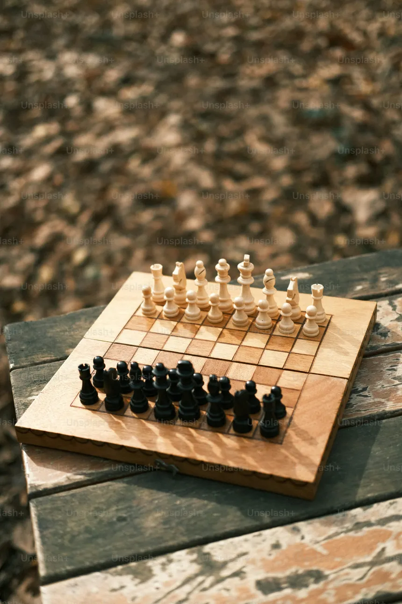
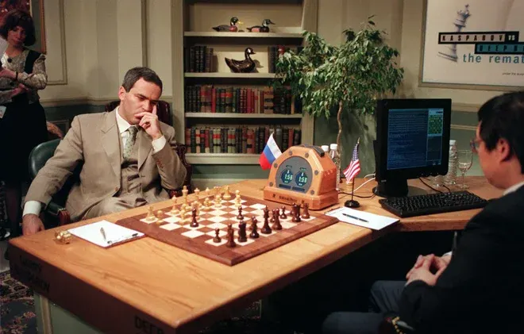

O xadrez é um dos jogos de estratégia mais antigos do mundo. Sua origem está ligada à Índia, por volta do século VI, onde existia um jogo chamado Chaturanga, que representava diferentes partes de um exército, como infantaria, cavalaria, elefantes e carruagens. Com o passar do tempo, o jogo se espalhou para outras regiões, chegando à Pérsia, onde recebeu o nome de Shatranj. Após a expansão do Império Islâmico, o xadrez chegou ao Oriente Médio, ao norte da África e posteriormente à Europa. Durante a Idade Média, tornou-se cada vez mais popular entre diferentes classes sociais. Entre os séculos XV e XVI, algumas regras foram modificadas, principalmente os movimentos da dama e do bispo, tornando o jogo mais parecido com o xadrez atual. Nos séculos XVIII e XIX, o xadrez passou por uma grande organização e começou a ganhar competições e clubes especializados. Em 1886, foi realizado o primeiro Campeonato Mundial de Xadrez oficialmente reconhecido, vencido por Wilhelm Steinitz. Desde então, diversos grandes jogadores se tornaram campeões mundiais, como José Raúl Capablanca, Bobby Fischer, Garry Kasparov e Magnus Carlsen. Atualmente, o xadrez é praticado no mundo inteiro, tanto presencialmente quanto pela internet. Ele é considerado um esporte intelectual e continua sendo conhecido por estimular o raciocínio lógico, a concentração, o planejamento e a tomada de decisões.
Cada abertura tem suas próprias características e estratégias, e a escolha da abertura pode influenciar o desenvolvimento do jogo. Jogadores experientes estudam diferentes aberturas para se preparar para partidas competitivas e para surpreender seus adversários.